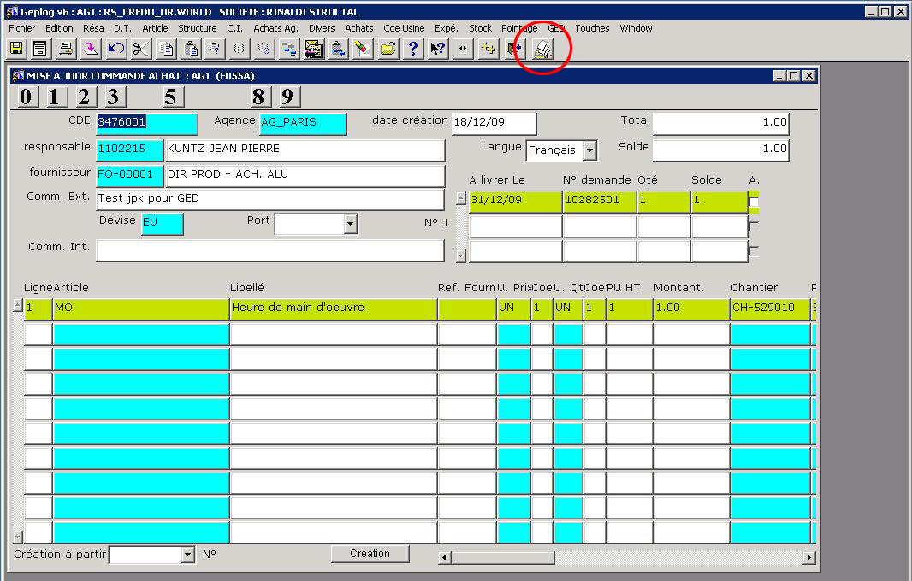
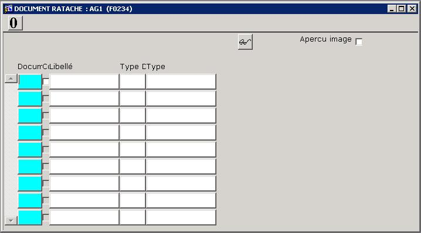
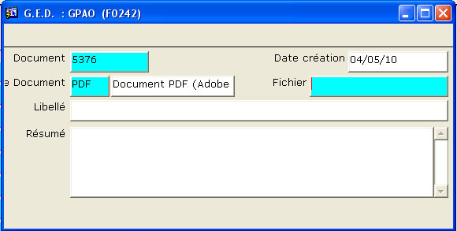
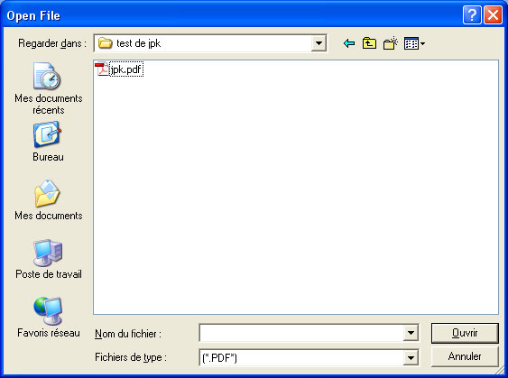
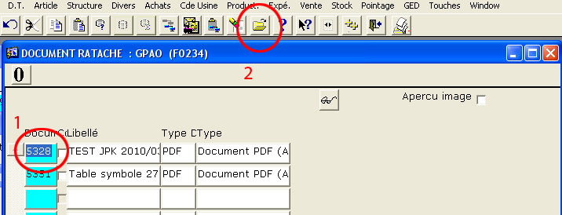
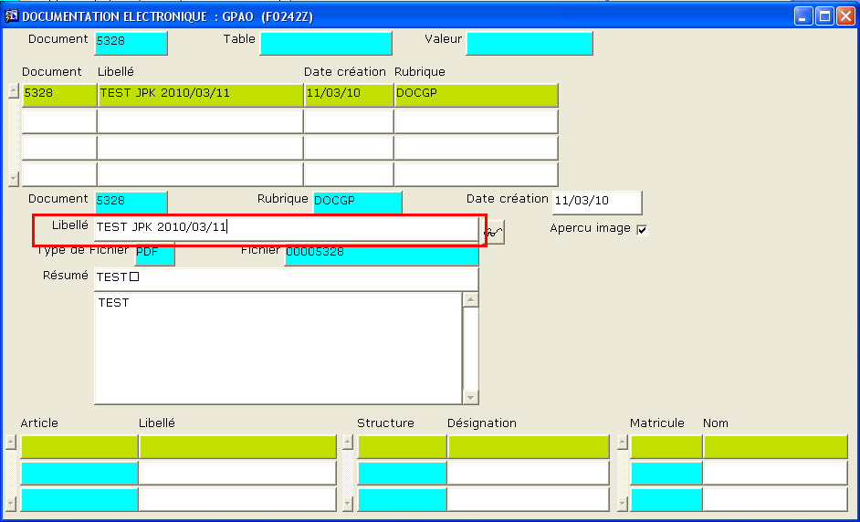

|
Depuis l'écran de saisie / modif de commande,
positionnez vous dans la zone supérieure, voire sur le champ (numéro de commande)
Cliquer sur l'icone  de la barre d'icones principale
de la barre d'icones principale

Une liste des pièces jointes apparaît
se placer sur la ligne du document que l'on souhaite consulter et cliquer sur
les lunettes 

rappel : pour quitter l'écran appuyer sur la touche F3 de votre clavier.
Attacher un document
Vous pouvez soit
lier un document existant (F4 sur le champs Document),
ajouter un nouveau document en cliquant sur le bouton 
nota : un document PDF peut contenir une ou plusieurs feuilles.
Ajout d'un nouveau document

Saisir dans
- Type Document : PDF
- Fichier : Appuyer sur F4 pour parcourir votre disque dur... et choisir le fichier à attacher
nota : un document PDF peut contenir une ou plusieurs feuilles.
 Astuce
: Astuce
:
Pour intégrer un autre type de document , par exemple un fichier Autocad,
Appuyer sur la combinaison de touches MAJ+Tabulation
pour vous positionner sur le champ "Type Document".
Demandez la liste de choix en appuyant au clavier sur la touche F4.
 Si le chemin de recherche est trop long, le fichier ne pourra pas être inclus.
Si le chemin de recherche est trop long, le fichier ne pourra pas être inclus.
(256 caractères maxi, limite de Windows)
Attention si vous cherchez sur un disque réseau ex: "public
sur rs-credo-nt1 (Z:)",
Windows traduit Z: par le nom réel sur le réseau "\\RS-CREDO-NT1\public\"
soit 22 caractères

- Enregistrer les informations avec F5 - un libellé par défaut va
s'inscrire...
( 28/06/2010
: Le libellé par défaut est le nom du fichier attaché.) 28/06/2010
: Le libellé par défaut est le nom du fichier attaché.)
- Libellé : le titre de votre document
Si vous le souhaitez, modifiez le libellé par défaut
 Afin de retrouver facilement vos documents, n'oubliez pas de leur donner un libellé clair. Afin de retrouver facilement vos documents, n'oubliez pas de leur donner un libellé clair.
Par exemple : Patte vent indice A,
ce libellé sera peut-être votre seul
moyen de retrouver facilement votre ajout dans la liste des documents.
Le résumé permet de mettre plus d'info...
- Résumé : tout commentaire utile
- Enregistrer les informations avec F5
- Une boite de dialogue vous confirme le transfert du document
Quitter l'écran d'ajout avec la touche F3 ou la croix en haut à droite de la
fenêtre.
Attention
de retour dans l'écran précédent (F0234), validez de nouveau avec F5 pour
enregistrer le lien entre votre document et la commande agence.
Une fois le document attaché, vous pouvez le visualiser en cliquant sur
Modifier le libellé ou le résumé d'un document
- Se placer sur la ligne du document a renommer, sur le champ Document
- Cliquer sur l'icone
(appel fiche de base)

- Vous arriverez sur l'écran ci-dessous, où vous pourrez modifier le
libellé / le résumé.
- Enregistrez les modification avec F5

Supprimer le lien entre un document et la commande
Se placer sur la ligne du lien a supprimer et appuyer sur la combinaison de
touches Shift+F12
nota : le document n'est pas supprimé physiquement du serveur GED,
seulement le lien entre ce document et la commande.
|